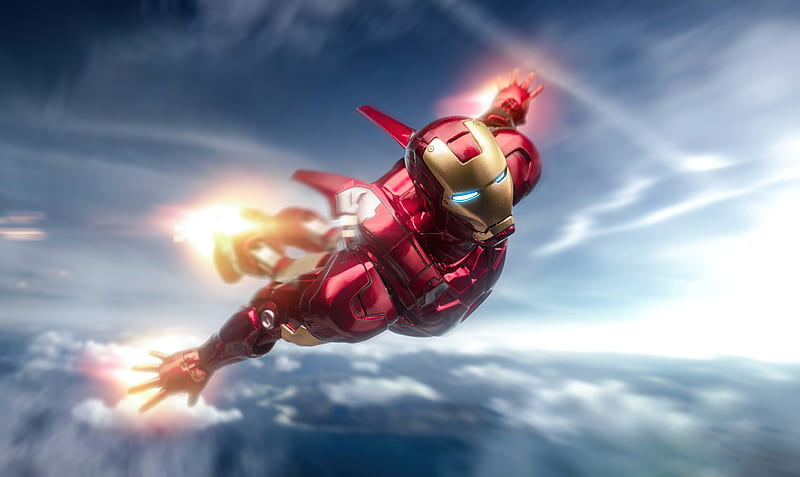
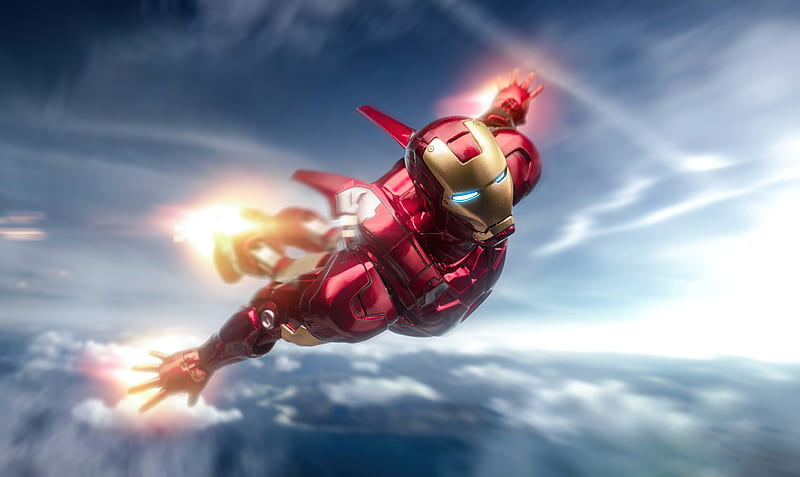

My SuperHero is IRON MAN
 

Intro of My Hero:
- Iron Man, one of Marvel Comics' most iconic superheroes, is the alter ego of Tony Stark, a billionaire genius, inventor, and philanthropist. Stark, head of Stark Industries, initially thrives as a self-centered industrialist profiting from weapons manufacturing. However, his life changes drastically when he is injured and captured during a demonstration in Afghanistan. With shrapnel threatening his heart, Stark is forced to build a weapon for his captors but instead creates a miniature Arc Reactor to sustain his life and powers a crude suit of armor to escape.
- This harrowing experience inspires Stark to rethink his role in the world. Returning home, he shuts down his company’s weapons division and dedicates his genius to creating advanced technologies for peace and protection. The red-and-gold Iron Man suit becomes his signature, boasting repulsor blasts, flight capabilities, and a vast array of technological advancements. Each iteration of the suit reflects Stark's inventive nature and adaptability, making Iron Man a symbol of innovation and resilience.
- Throughout his journey, Stark’s evolution from a self-centered playboy to a selfless hero is evident. His relationships, particularly with Pepper Potts and his Avengers teammates, show his capacity for growth and emotional depth. Stark’s ultimate sacrifice in Avengers: Endgame, where he wields the Infinity Stones to save the universe, solidifies his legacy as a true hero. His final words, “I am Iron Man,” serve as a powerful reminder of his journey and resolve.
The Best Moment of Tony Stark:
The best moment that I had felt is the creation of his Arc Reactor of vibranium, which solved a major issue of his palladium poisoning and symbolized his resilience and genius. This moment in Iron Man 2 showed Stark overcoming personal and scientific challenges, guided by his late father’s legacy, and taking control of his destiny with groundbreaking innovation
Additional moments that also I like:
- Trapped in captivity, Tony constructs the Mark I armor with limited resources, a defining moment showcasing his ingenuity and survival instincts.
- Stark ends the film with his bold declaration, "I am Iron Man," breaking the traditional secret identity trope and embracing his superhero persona publicly.
- Stark heroically guides a nuclear missile into space to save the city, risking his life and displaying ultimate courage as a team player.
- Stark steps into a fatherly role, guiding Peter with tough love while encouraging his growth as Spider-Man, showing a softer and more caring side.
- Stark’s ultimate act of heroism, wielding the Infinity Stones to save the universe, is a poignant culmination of his journey, with his final words echoing his legacy: "I am Iron Man."
These moments collectively define Iron Man as a superhero who combines intelligence, determination, and heart to overcome challenges and inspire greatness.
Why I like Him:
- Basically Tony Stark is known for his Genius, billionaire, and able to make up IRON MAN Suit which he made in the cave itself!
- I mostly liked him the way he showed Himself is the only BEST of All! The attitude of improving Himself by Learning from his Mistakes!
- His Attitude! His Intelligence made me to get inspired and the normal Human who makes Impossible to Possible. And also one more is the Quick learning from each and every mistakes!
If you want to see some of Best of him are below:
- All Suitups of IronMan:- Ironman Suit Up
- Every Inventions of Ironman:- Every Inventions of Ironman
- Tony Stark’s Attitude:- Ironman Attitude
- The phrase:- I love you 3000❤️
- Return of Hero:- As a Villian
Those who visited this Webpage:
Thank you, friends, for visiting this page and exploring the incredible journey of Iron Man. Tony Stark’s transformation from a flawed billionaire to a selfless hero teaches us that true greatness comes from innovation, resilience, and the courage to fight for what's right. Just like Stark's legacy, let’s be inspired to use our talents to make a positive impact. Remember, we all have the potential to be heroes in our own unique way. Keep dreaming big, and as Iron Man says, “We create our own future!”